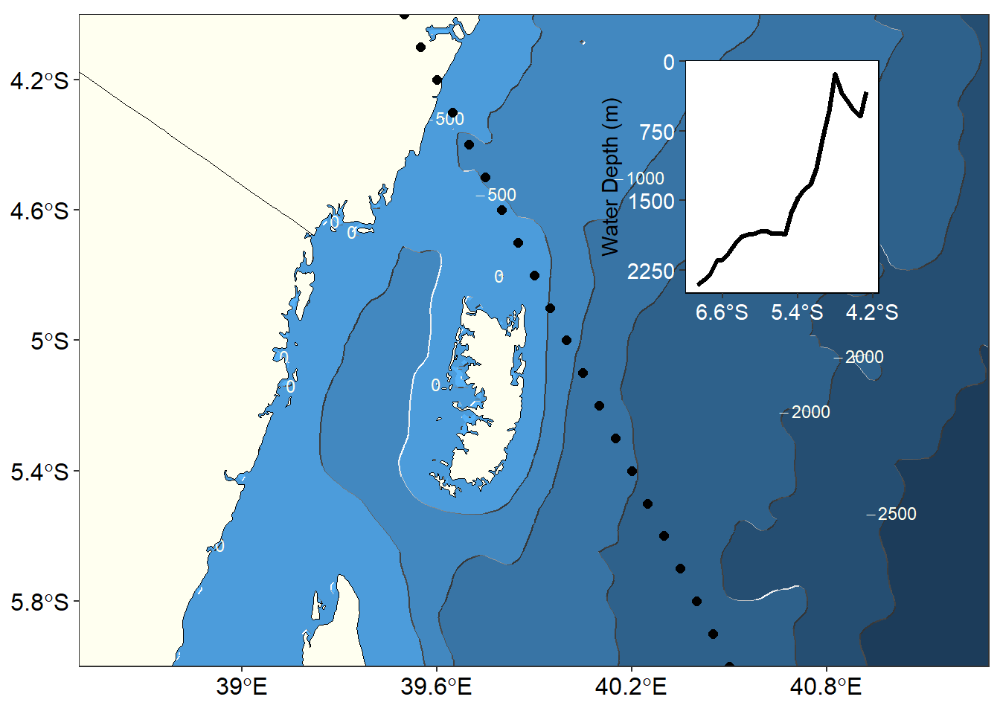

Chapter 24 Extract bathymetric values from ETOPO1
In chapter, we explore the power of ggplot package in mapping oceanographic data. In this post we will continue that theme and dive to process topographic data and map the bathymetry. We will grab ETOPO1 dataset— a 1 arc-minute global relief model that integrates land topography and ocean bathymetry. We will process the data and then use different ways to visualize the bathymetric information. There is no much statistics or modelling in this chapter, but the stretch your brain on processing the ascii (.asc) file and transform it data frame that ggplot2 and metR packages work friendly (Kelley and Richards 2018). We need functions from some packages, hence to use their functions we need to load these packages into our workspace.
require(tidyverse)
require(oce)
require(ocedata)The ETOPO1 dataset was downloaded as an ascii file and used the function raster::raster() to read the file from the local directory and import the data from the working directory into the workspace (R Core Team 2019). The imported files was assigned name as etopo
etopo = raster::raster("./Tanzania_etopo1/tanz1_-3432.asc")[1] "RasterLayer"
attr(,"package")
[1] "raster"The raster() function produce the RasterLayer object. Although this RasterLayer object fits for plotting using base R graphic, its not in the right format for working with ggplot2 and siter packages like metR, which both can read the data that structured in the tabular format like data frame or tibble. Fortunately, raster package has a as.data.frame() function that convert raster layer into data frame directly. We tranform this class into data frame and changed the variables names. The data frame now has three variables—longitude, latitude and topographic values—treated as elevation though does store the elevation and bathymetry.
etopo.df = etopo %>%
as.data.frame(xy = TRUE) %>%
rename(lon = x, lat = y, elevation = 3)Once the data converted to data frame with xyz variables, we can use the information to map the patterns of bottom topography of the area of interest with ggplot2 and metR packages. However, our interest is map the bathmetry as contour, therefore we drop all values of the elevation that are greater than zero (i.e elevation) and retain only the values equal or less than zero (bathmetry). Picking the bathmetry values was done using the filter() function from dplyr package (Wickham et al. 2019)
bathmetry = etopo.df %>%
filter(elevation <= 0 & lon > 35 & lon < 45 & lat > -18 & lat < -2) %>%
rename(bath = elevation)Once we have the batmetry in ggplot2 readable format, we need one more dataset—the basemap with country’s boundary. We need these dataset as basemaps—that provide background details for the maps we are going to make. We can read the file and import directly into the workspace using the read_sf() function from sf package as the chunk below shows;
africa = read_sf("./africa/Spatial/AdmInfr/afcntry.shp")We have all the datase—the basemaps and the data frammed bathymetry data in the format that ggplot2 and its sisters package understand. The figure 24.1 was created using lines of codes highlighted in the chunk below.
## pemba data
pemba.bath = bathmetry%>%
filter(bath >= -32000 & lon > 38 & lon < 42 & lat > -7 & lat < -1)
ggplot()+
metR::geom_contour_fill(data =pemba.bath,
aes(x = lon, y = lat, z = bath), na.fill = TRUE, show.legend = FALSE)+
metR::geom_contour_tanaka(data =pemba.bath,
aes(x = lon, y = lat, z = bath))+
metR::geom_text_contour(data =pemba.bath,
aes(x = lon, y = lat, z = bath), size = 3.2,
check_overlap = TRUE, parse = TRUE, col = "ivory", rotate = FALSE)+
geom_sf(data = aoi, fill = "ivory", col = "black", size = .25)+
coord_sf(xlim = c(38.5,41.3), ylim = c(-6,-4), expand = FALSE)+
# geom_point(data = transect, aes(x = lon, y = lat))+
scale_x_continuous(breaks = seq(39,41,.6))+
scale_y_continuous(breaks = seq(-5.8,-4.2,.4))+
theme_bw()+
theme(axis.text = element_text(size = 12, colour = 1))+
labs(x = NULL, y = NULL)Figure 24.1: Figure 1
24.0.1 Extracting values
Suppose, we are interested with the depth value from the stations we took profiles of temperature and salinity along the transect (Figure 24.2). We can create an imaginary CTD cast along the transect with a tibble() function—an extended version of data.frame()—both make a tabular structure of variables organized in rows and columns. The chunk transect in figure was created with the code in the chunk block below
transect = tibble(lon = pretty(c(39,41), n = 40),
lat = pretty(c(-3,-7), n = 40) %>% rev())## pemba data
pemba.bath = bathmetry%>%
filter(bath >= -32000 & lon > 38 & lon < 42 & lat > -7 & lat < -1)
ggplot()+
metR::geom_contour_fill(data =pemba.bath,
aes(x = lon, y = lat, z = bath), na.fill = TRUE, show.legend = FALSE)+
metR::geom_contour_tanaka(data =pemba.bath,
aes(x = lon, y = lat, z = bath))+
metR::geom_text_contour(data =pemba.bath,
aes(x = lon, y = lat, z = bath), size = 3.2,
check_overlap = TRUE, parse = TRUE, col = "ivory", rotate = FALSE)+
geom_sf(data = aoi, fill = "ivory", col = "black", size = .25)+
coord_sf(xlim = c(38.5,41.3), ylim = c(-6,-4), expand = FALSE)+
geom_point(data = transect, aes(x = lon, y = lat), size = 2)+
scale_x_continuous(breaks = seq(39,41,.6))+
scale_y_continuous(breaks = seq(-5.8,-4.2,.4))+
theme_bw()+
theme(axis.text = element_text(size = 12, colour = 1))+
labs(x = NULL, y = NULL)
Figure 24.2: Figure 1
Once we have points along the track, we can get the depth of each points from the bathmetry value. This simply means extract values of a raster cell for each longitude and latitude and output as vector. This can be achieved with extract()function of the raster package. Because we use the raster package, we have to convert the xyz bathmetric dataset into raster layer as the chunk below show. In a nutshell, the code does two main task—convert the bathmetry that is in xyz into the raster layer with rasterFromXYZ() function and then exract() the bathmetry value at each geographical coordinates with the extract() function. The table 24.1 highlight the water depth extracted at each longitude and latitude coordinates.
bath = pemba.bath %>%
raster::rasterFromXYZ() %>%
raster::extract(transect)
transect = data.frame(transect, bath)| Longitude | Latitude | Water depth (m) |
|---|---|---|
| 39.65 | -4.3 | -326 |
| 39.70 | -4.4 | -594 |
| 39.75 | -4.5 | -532 |
| 39.80 | -4.6 | -437 |
| 39.85 | -4.7 | -345 |
| 39.90 | -4.8 | -135 |
| 39.95 | -4.9 | -538 |
| 40.00 | -5.0 | -843 |
| 40.05 | -5.1 | -1157 |
| 40.10 | -5.2 | -1331 |
| 40.15 | -5.3 | -1386 |
| 40.20 | -5.4 | -1478 |
| 40.25 | -5.5 | -1637 |
| 40.30 | -5.6 | -1868 |
| 40.35 | -5.7 | -1852 |
| 40.40 | -5.8 | -1856 |
| 40.45 | -5.9 | -1826 |
| 40.50 | -6.0 | -1832 |
| 40.55 | -6.1 | -1856 |
| 40.60 | -6.2 | -1869 |
| 40.65 | -6.3 | -1890 |
| 40.70 | -6.4 | -1963 |
| 40.75 | -6.5 | -2072 |
| 40.80 | -6.6 | -2139 |
| 40.85 | -6.7 | -2151 |
| 40.90 | -6.8 | -2302 |
| 40.95 | -6.9 | -2360 |
| 41.00 | -7.0 | -2412 |
The profile was plotted on top of the bathmetry map as shown in figure ??
map = ggplot()+
metR::geom_contour_fill(data =pemba.bath,
aes(x = lon, y = lat, z = bath), na.fill = TRUE, show.legend = FALSE)+
metR::geom_contour_tanaka(data =pemba.bath,
aes(x = lon, y = lat, z = bath))+
metR::geom_text_contour(data =pemba.bath,
aes(x = lon, y = lat, z = bath), size = 3.2,
check_overlap = TRUE, parse = TRUE, col = "ivory", rotate = FALSE)+
geom_sf(data = aoi, fill = "ivory", col = "black", size = .25)+
coord_sf(xlim = c(38.5,41.3), ylim = c(-6,-4), expand = FALSE)+
geom_point(data = transect, aes(x = lon, y = lat), size = 2)+
scale_x_continuous(breaks = seq(39,41,.6))+
scale_y_continuous(breaks = seq(-5.8,-4.2,.4))+
theme_bw()+
theme(axis.text = element_text(size = 12, colour = 1))+
labs(x = NULL, y = NULL)
profile = ggplot()+
geom_path(data = transect, aes(x = lat, y = bath), size = 1.2)+
# geom_point(data = transect, aes(x = lat, y = bath), size = 2)+
scale_x_continuous(breaks = seq(-7.8,-3,1.2), labels = metR::LatLabel(seq(-7.8,-3,1.2)))+
scale_y_continuous(breaks = seq(-3000,0,750), labels = seq(0,3000,750)%>%rev())+
theme(panel.background = element_rect(fill = "white", colour = "black"),
plot.background = element_rect(fill = NA, colour = NA),
panel.border = element_rect(fill = NA, colour = 1),
axis.text = element_text(size = 11, colour = "white"))+
coord_cartesian(expand = FALSE, xlim = c(-7.2,-4.1), ylim = c(-2500,5))+
labs(x = NULL, y = "Water Depth (m)")
cowplot::ggdraw()+
cowplot::draw_plot(plot = map, x = 0, y = 0, width = 1, height = 1) +
cowplot::draw_plot(plot = profile, x = .59,y = .53, width = .3,height = .4)
24.0.2 Reference
Kelley, Dan, and Clark Richards. 2018. Oce: Analysis of Oceanographic Data. https://CRAN.R-project.org/package=oce.
R Core Team. 2019. R: A Language and Environment for Statistical Computing. Vienna, Austria: R Foundation for Statistical Computing. https://www.R-project.org/.
Wickham, Hadley, Romain François, Lionel Henry, and Kirill Müller. 2019. Dplyr: A Grammar of Data Manipulation. https://CRAN.R-project.org/package=dplyr.
References
Kelley, Dan, and Clark Richards. 2018. Oce: Analysis of Oceanographic Data. https://CRAN.R-project.org/package=oce.
R Core Team. 2019. R: A Language and Environment for Statistical Computing. Vienna, Austria: R Foundation for Statistical Computing. https://www.R-project.org/.
Wickham, Hadley, Romain François, Lionel Henry, and Kirill Müller. 2019. Dplyr: A Grammar of Data Manipulation. https://CRAN.R-project.org/package=dplyr.